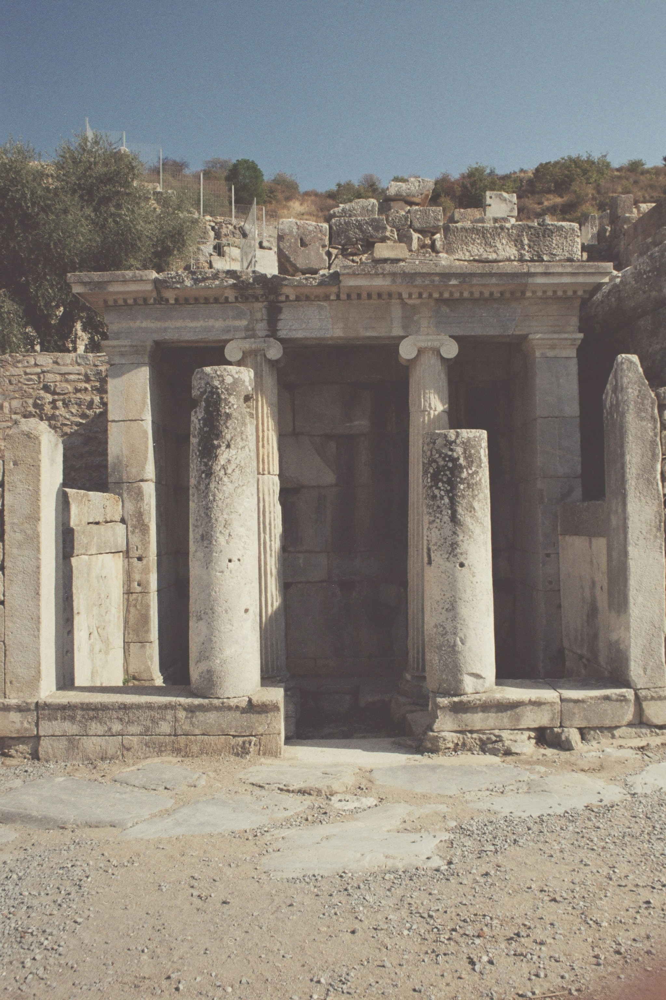
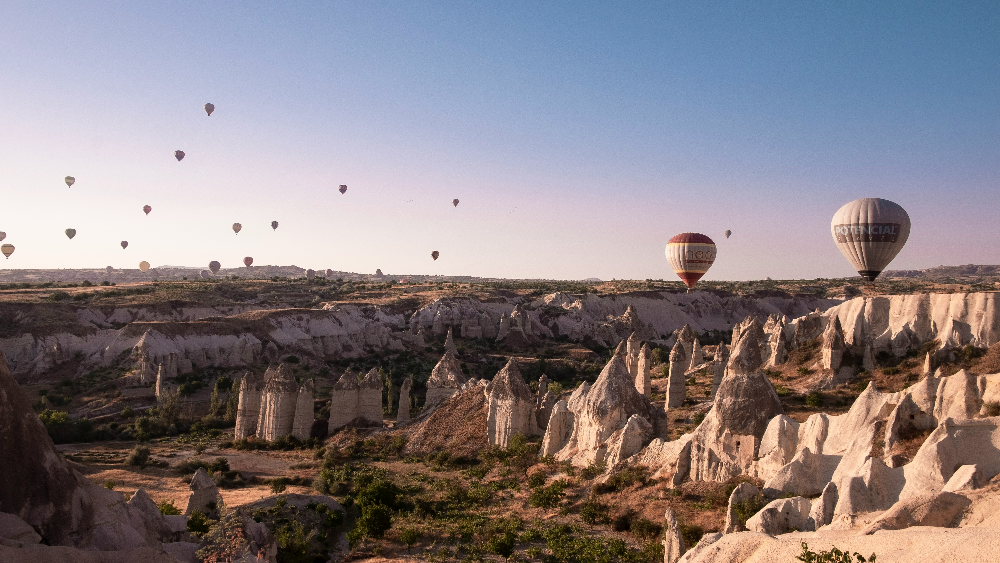
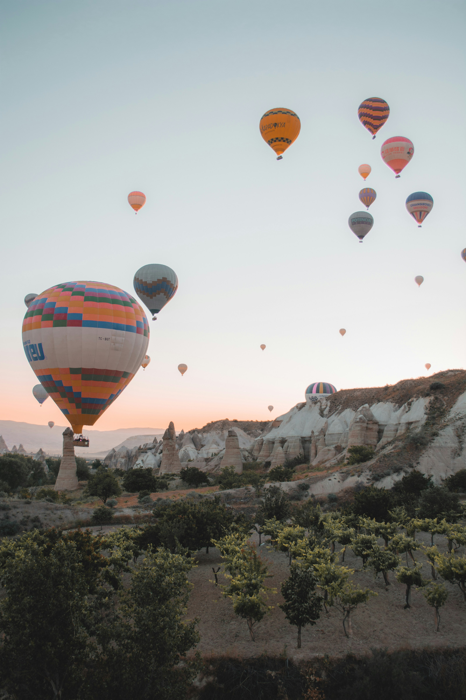
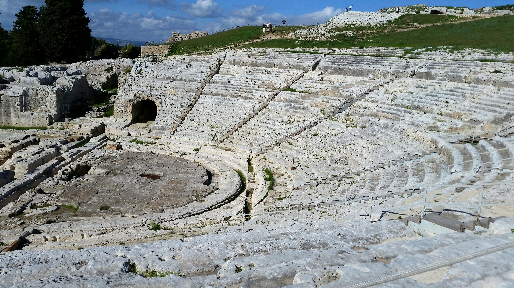

Sicilia · 8 Giorni
Magna
Graecia.
Segesta, Selinunte, Agrigento, Villa del Casale, Siracusa. Otto giorni tra i templi dorici e i mosaici romani della Sicilia, dove la pietra dorata incontra il mare.
Prima di andare
Iscriviti per ricevere in anteprima i nuovi itinerari.
Sicilia · 8 Giorni
Segesta, Selinunte, Agrigento, Villa del Casale, Siracusa. Otto giorni tra i templi dorici e i mosaici romani della Sicilia, dove la pietra dorata incontra il mare.
Durata
8 giorni
Gruppo
Max 10
Da
€ 3.200
Stagione
Apr — Giu / Set — Ott
Difficolta
Facile
L'itinerario completo
Arrivo a Palermo. Trasferimento verso ovest fino a Segesta, dove il Tempio Dorico (430-420 a.C.) sorge solitario su una collina battuta dal vento. Uno dei meglio conservati del Mediterraneo, eppure mai completato: le colonne non furono mai scanalate, le sporgenze di trasporto sono ancora visibili sulla pietra, nessuna cella interna fu mai costruita. Un cantiere interrotto da venticinque secoli, perfetto nella sua incompiutezza. Salita al Teatro Ellenistico del III secolo a.C. — 4.000 posti scavati nella roccia, con vista sul Golfo di Castellammare. Notte in zona Trapani o Erice.


Il parco archeologico piu grande d'Europa: 270 ettari di storia. Sulla Collina Orientale, il Tempio E dedicato a Hera — parzialmente ricostruito, imponente — e il Tempio G, uno dei piu grandi mai costruiti nel mondo greco (110 per 50 metri), mai completato nemmeno lui. Sull'Acropoli, il Tempio C del VI secolo a.C. con tracce della policromia originale ancora visibili sulla pietra. Pranzo a base di pesce fresco a Marinella, con i templi all'orizzonte. Pomeriggio alle Cave di Cusa — le antiche cave dove i rocchi delle colonne sono ancora attaccati alla roccia madre, il lavoro interrotto bruscamente nel 409 a.C. quando Cartagine attacco. Un cantiere abbandonato da 2.400 anni, intatto.
Mattina libera sulla spiaggia di Marinella — il mare ai piedi dei templi, un privilegio che esiste solo qui. Pomeriggio dedicato ai sapori della Sicilia occidentale: degustazione vini nella zona Menfi-Sambuca — Nero d'Avola e Grillo, vitigni autoctoni che raccontano il terroir. In alternativa, cooking class di cous cous trapanese: un piatto che porta in tavola l'eredita araba unica di questa costa, dove l'Africa si vede nei giorni chiari. Sera libera.

Trasferimento ad Agrigento. La Valle dei Templi al tramonto — Patrimonio UNESCO dal 1997. Il Tempio della Concordia: il tempio dorico meglio conservato al mondo, sopravvissuto perche convertito in basilica cristiana nel VI secolo d.C. Il Tempio di Hera, con le pietre arrossate dall'incendio cartaginese del 406 a.C. — il segno del fuoco ancora visibile dopo 2.400 anni. Il Tempio di Eracle, il piu antico della valle. Il Tempio di Zeus Olimpio, il piu grande tempio dorico mai costruito, con i Telamoni — figure colossali di 7,5 metri. Passeggiata nel Giardino della Kolymbethra, antico sistema idraulico del V secolo a.C. restaurato dal FAI, oggi un frutteto di agrumi e mandorli. Notte alla Villa Athena — l'unico hotel al mondo con vista diretta sul Tempio della Concordia.
Mattina al Museo Archeologico Pietro Griffo: il Telamone ricostruito nella sua altezza originale, l'Efebo di Agrigento — capolavoro di scultura greca del V secolo a.C. Trasferimento a Piazza Armerina per la Villa Romana del Casale, Patrimonio UNESCO: 3.500 metri quadrati di mosaici romani del IV secolo d.C., i piu estesi e meglio conservati al mondo. Le celebri Ragazze in Bikini. Il Grande Corridoio della Caccia, lungo 60 metri, con scene di cattura di animali esotici dall'Africa. Le scene di Ulisse e Polifemo. Ogni stanza un racconto in tessere di pietra. Trasferimento a Siracusa nel tardo pomeriggio.

Parco Archeologico della Neapolis. Il Teatro Greco — 138 metri di diametro, 15.000 posti, ancora usato ogni anno per le rappresentazioni classiche dell'INDA. Un teatro dove Eschilo mise in scena le sue tragedie, e dove si recita ancora oggi. L'Orecchio di Dionisio: la grotta con un'acustica straordinaria, cosi battezzata da Caravaggio nel 1608. Le Latomie del Paradiso — antiche cave di pietra trasformate in giardini. L'Anfiteatro Romano, tra i piu grandi dell'isola. Pomeriggio libero a Ortigia, il cuore antico di Siracusa.
Il Tempio di Apollo — inizio del VI secolo a.C., il piu antico tempio dorico in pietra della Sicilia. Poi il Duomo, il cuore del viaggio: la facciata e barocca, ma dentro le colonne del Tempio di Atena del 480 a.C. sono ancora strutturali. Si toccano colonne greche di 2.500 anni che reggono una cattedrale cristiana. La Fonte Aretusa, il mito raccontato da Ovidio — acqua dolce che sgorga a pochi metri dal mare. Mercato di Ortigia tra aromi di spezie e pesce fresco. Nel pomeriggio, navigazione privata lungo la costa in barca a vela con aperitivo al tramonto. Cena in ristorante sul porto, tra le luci della sera sull'acqua.
Mattina libera a Ortigia per un ultimo caffe in piazza, un'ultima passeggiata tra i vicoli bianchi e il mare. Trasferimento all'aeroporto di Catania e partenza. Otto giorni finiscono, ma la Magna Graecia resta — nelle colonne, nella luce, nella pietra che porta ancora i segni di chi l'ha scolpita.
Perche questo viaggio
Il Tempio della Concordia ad Agrigento e sopravvissuto 2.500 anni. Lo visitiamo al tramonto, quando la pietra calcarea diventa dorata e il tempo sembra fermarsi tra le colonne. Un momento che non si dimentica.
A Selinunte il mare e ai piedi dei templi. A Cave di Cusa, colonne abbandonate nel 409 a.C. sono ancora nella roccia. Due mondi che si toccano — la civilta greca e il Mediterraneo che l'ha resa possibile.
Il Duomo di Siracusa: fuori barocco, dentro le colonne greche del 480 a.C. Tocchi la storia con le mani. Colonne doriche di venticinque secoli fa che reggono ancora una cattedrale viva.
Dettagli pratici
Prezzo
A partire da
€ 3.200
per persona, base camera doppia
Il prezzo varia in base alla composizione del gruppo e alla personalizzazione dell'itinerario. Supplemento singola disponibile su richiesta.
Inizia da qui
Rimani aggiornato